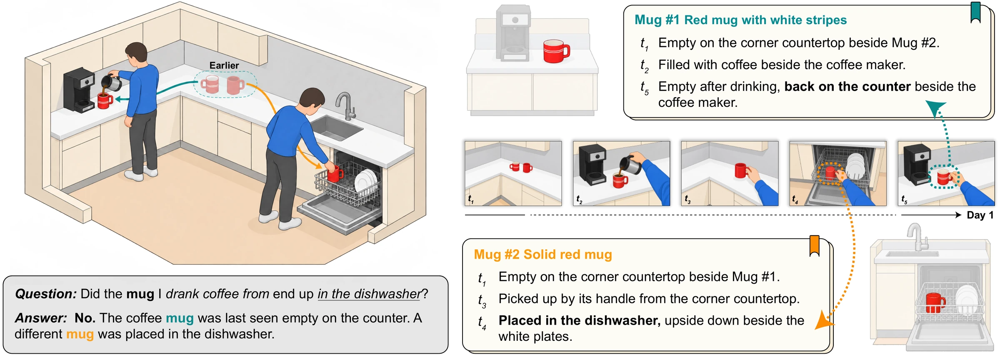
Abstract
Answering questions about long videos often requires connecting events involving the same objects across hours or days. Chronological descriptions and text-derived entities can leave physical identity unresolved: different objects may share a description, while observations of the same object remain disconnected across events. Retrieving relevant events therefore does not necessarily recover the “biography” of the particular entity a question concerns. To address this, we introduce Grounded Entity Biographies (GEB), a long-video memory framework that groups visually grounded observations of the same physical instance across clips into retrievable biographies while preserving the context of each moment. During question answering, the biography is retrieved alongside episodic evidence, allowing the model to follow an entity through events using identity links established during memory construction. Evaluations across four benchmarks, including day-long and week-long recordings, demonstrate improvements over prior memory frameworks in both multiple-choice and open-ended question answering. On EgoLifeQA, GEB achieves 72.0% accuracy, 4.4 percentage points above the best published result. Ablations show that grounded identity association and biography reading both contribute to the gains, which additional descriptions alone do not fully recover.
Chronicle and biography
History can be organized around events or around the subjects who took part. A chronicle follows events through time; a biography follows a subject through those events. Long-video memory needs both: it must recover what happened at a particular moment and connect what happened to the same person or object across hours or days.
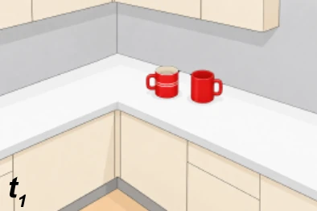
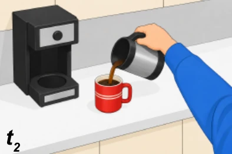
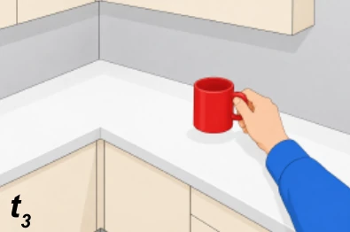
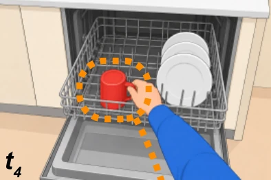
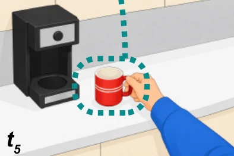
The same five moments, arranged twice. Read as a chronicle, two accurate descriptions of “a red mug” cannot say whether they concern the same mug. Read as biographies, the coffee mug never reaches the dishwasher.
Method
One blue hand mixer, followed from Day 1 to Day 6. The memory is written in three steps and read in three more.
- Ground
- Observe
- Associate
- Retrieve
- Read
- Answer
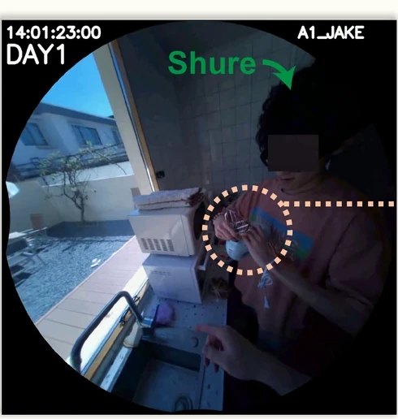
Day 1 · 14:01
described from its crops, the scene frames and the dialogue
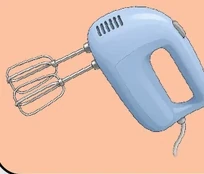
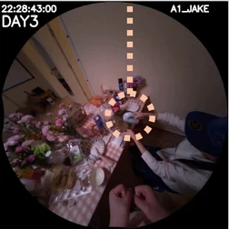
Day 3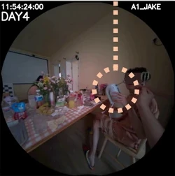
Day 4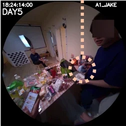
Day 5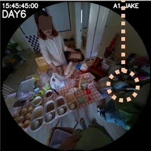
Day 6An observation joins only if it matches the entity's recent references and is never seen apart from them in a shared frame.
[Day 1 14:01] Shure shows how to attach the beaters.
Other recorded appearances 13:50, 13:55 …
Results
Four benchmarks over week-long and day-long recordings, with multiple-choice and open-ended questions. GEB has the highest overall score on every split.
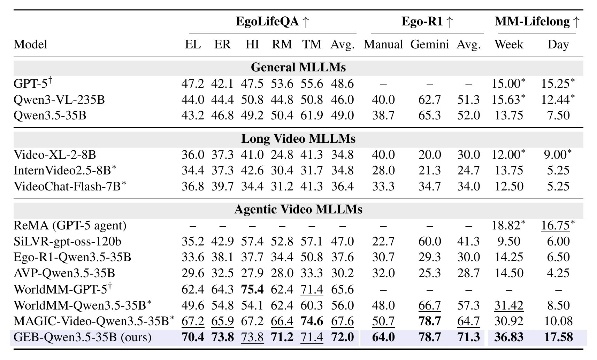
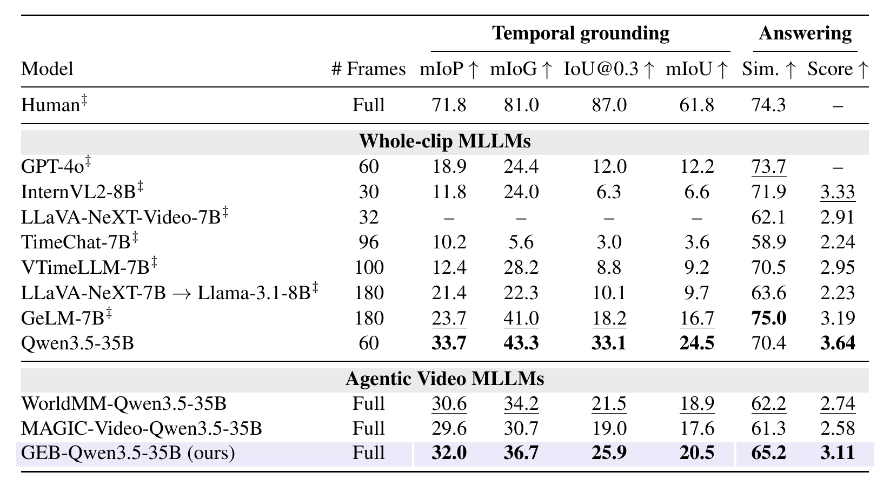
Ablation
EgoLifeQA accuracy (%) with one decision removed; controller and answer model fixed.
| The index | Acc. | The reading | Acc. |
|---|---|---|---|
| GEB (full) | 72.0 | ||
| w/o association | 68.6 | w/o biography text (index only) | 68.0 |
| identity keyed by name | 69.2 | w/o biography text for the answer model | 70.8 |
| descriptions appended to captions | 68.2 | w/o identity notes | 68.2 |
| w/o observation→timeline edges | 68.2 | w/o unsearched-observation line | 70.2 |
| w/o caption text | 61.8 | ||
| w/o visual frames | 70.4 |
Evidence reaches the answer model more often
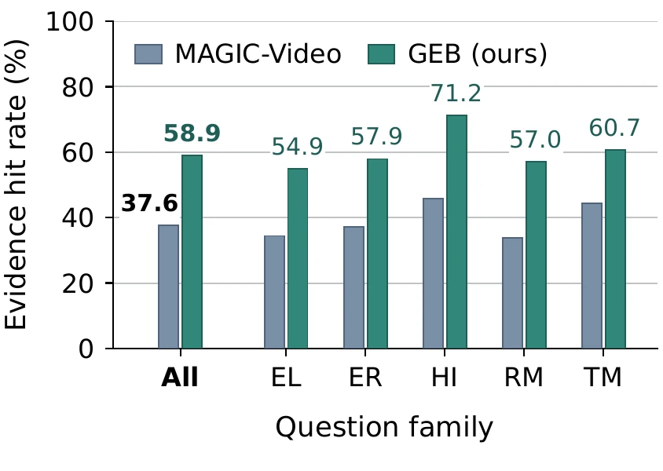
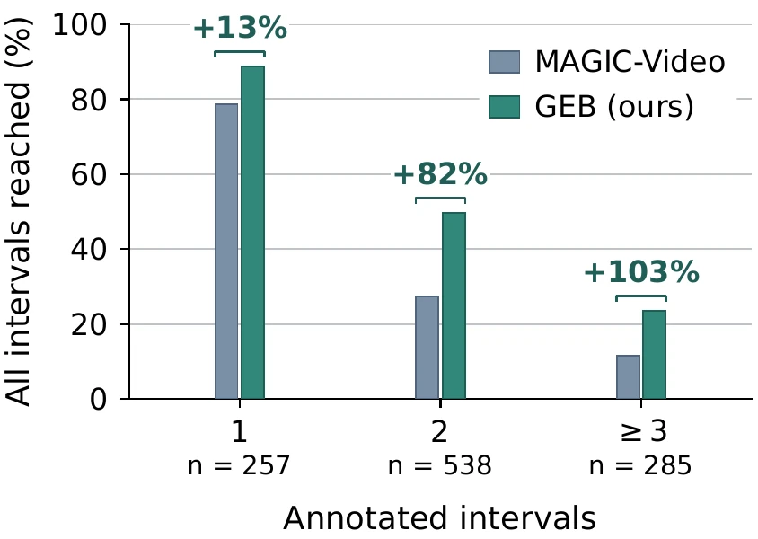
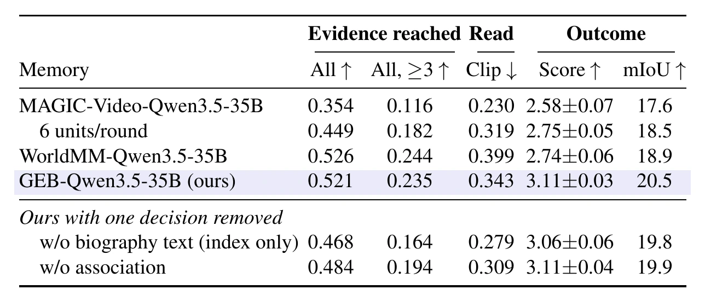
Two caps, two biographies
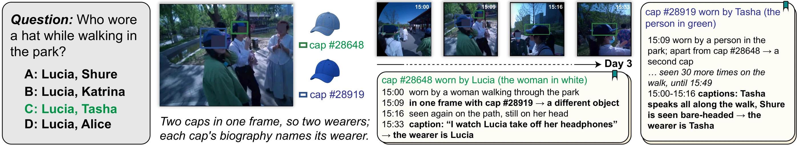